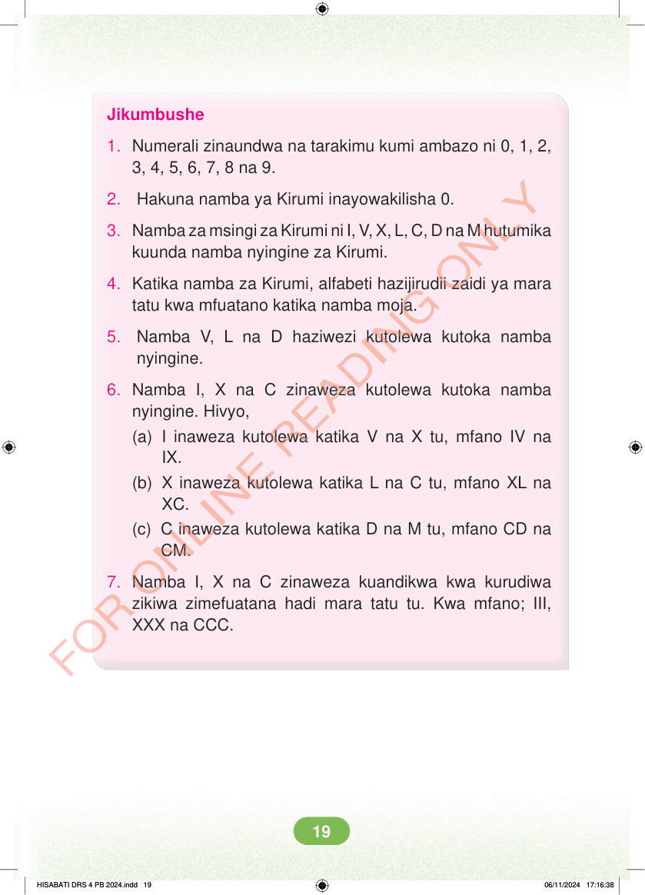

<!DOCTYPE html>
<html lang="sw-TZ"><head><meta charset="utf-8"><meta name="viewport" content="width=device-width,initial-scale=1">
<title>Hisabati: Kitabu cha Mwanafunzi Darasa la Nne</title>
<meta name="title-id" content="pg025_sec001"><meta name="page-section-id" content="25">
<link href="./content/tailwind_output.css" rel="stylesheet"><link href="./assets/libs/fontawesome/css/all.min.css" rel="stylesheet"><link href="./assets/fonts.css" rel="stylesheet">
<style>body{margin:0;background:#eef1ed}main{width:100%;display:flex;justify-content:center;padding:1rem 1rem 5rem;box-sizing:border-box}#content{width:100%;display:flex;justify-content:center}.pdf-page{position:relative;width:min(calc(100vw - 2rem),56rem);aspect-ratio:540.8980102539062/750.6610107421875;background:white;box-shadow:0 4px 24px #0002;overflow:hidden}.pdf-page img{position:absolute;inset:0;width:100%;height:100%;object-fit:fill}</style>
</head><body><main><h1 class="sr-only" id="page-heading">Ukurasa wa 25</h1><div id="content" class="opacity-0"><section role="article" data-section-type="pdf_accessible_page" data-section-id="pg025_sec001" aria-labelledby="page-heading" class="pdf-page"><p class="sr-only" data-id="pg025_gp001_tx001">Jikumbushe 1. Numerali zinaundwa na tarakimu kumi ambazo ni 0, 1, 2, 3, 4, 5, 6, 7, 8 na 9. 2. Hakuna namba ya Kirumi inayowakilisha 0. 3. Namba za msingi za Kirumi ni I, V, X, L, C, D na M hutumika kuunda namba nyingine za Kirumi. 4. Katika namba za Kirumi, alfabeti hazijirudii zaidi ya mara tatu kwa mfuatano katika namba moja. 5. Namba V, L na D haziwezi kutolewa kutoka namba nyingine. 6. Namba I, X na C zinaweza kutolewa kutoka namba nyingine. Hivyo, (a) I inaweza kutolewa katika V na X tu, mfano IV na IX. (b) X inaweza kutolewa katika L na C tu, mfano XL na XC. (c) C inaweza kutolewa katika D na M tu, mfano CD na CM. 7. Namba I, X na C zinaweza kuandikwa kwa kurudiwa zikiwa zimefuatana hadi mara tatu tu. Kwa mfano; III, XXX na CCC. HISABATI DRS 4 PB 2024.indd 19 HISABATI DRS 4 PB 2024.indd 19 06/11/2024 17:16:38 06/11/2024 17:16:38</p></section></div></main><div class="relative z-50" id="interface-container"></div><div class="relative z-50" id="nav-container"></div><script src="./assets/offline-preloader.js"></script><script src="./assets/scorm.js"></script><script src="./assets/base.bundle.local.js"></script></body></html>